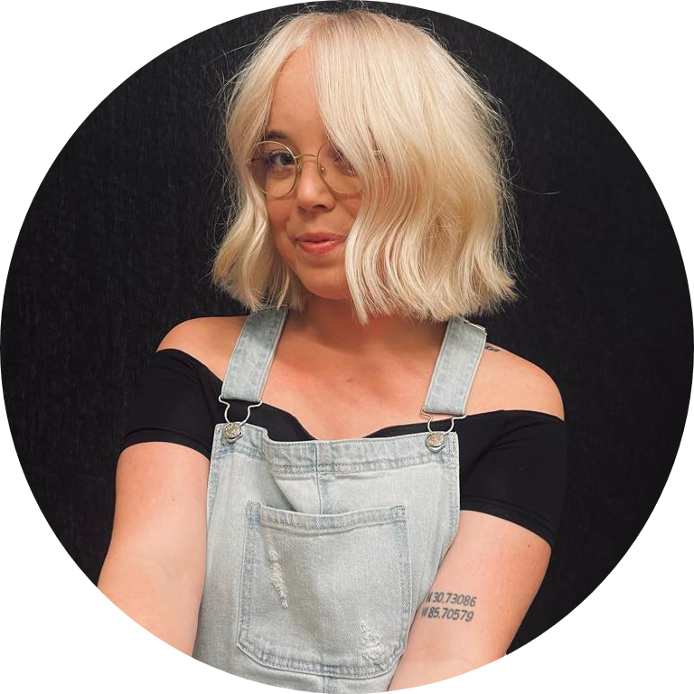

Hi. I'm Haley.
An Aspiring Software Engineer.


Currently working at Big Nerd Ranch as one of their Talent Acquisition Specialists. I have been in technical recruiting for over two years now and through that have found aspirations of becoming a Software Engineer myself. More than anything, I am excited to find a way to combine my passion for DEI, with my newfound venture into the world of web development; I believe that diversity, equity and inclusion should exist in all spaces, and especially in tech. Excited for this journey and what's to come!

My recruiting career began in 2018 when I accepted an internship on the HR team at a local non-profit organization. Fast track over three years later and I am now working as a Talent Acquisition Specialist for Big Nerd Ranch! I love working with Software Engineers and getting the chance to learn something new everyday.

I recently made the commitment to learning web development and so far I am really loving it. There are a lot of reasons behind why I took the leap into learning this new skill, but it really all comes down to the fact that I love puzzles, and I love the idea of being able to create and learn for a living. So I am making my way through an online full-stack bootcamp, currently in the world of CSS and Bootstrap and learning the fun yet complex world of styling.
Guidance, pointers, words of encouragement, inspirational quotes, sub-par memes, on-par memes, office gifs, any music you are listening to right now, any music you reccommend for listening to while studying hours of code, etc.
CONTACT ME